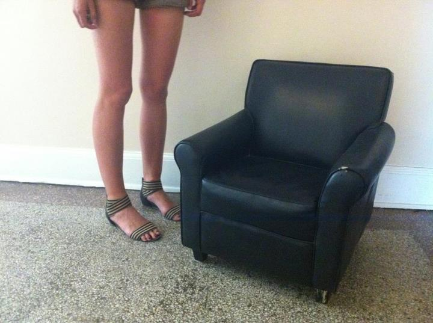

NEPO 5K DON'T RUN 2012: CURATORS

Sierra Stinson is a Northern California native, born to hippy parents who took her on many road trips throughout the western states of North America. She is a facilitator and gleaner. Sierra founded Vignettes in 2010 on Capitol Hill in Seattle, a monthly one night only exhibition space in her apartment. She lives there with her boyfriend, their 18 plants, 100 Cassettes, 200 VHS, an unknown number of records, and never-ending art collection.
Zack Bent is an artist, and educator living Seattle. As a Dad who spends a fair amount of time in the kitchen, Zack always hopes to be involved with art experiences that are synonymous with the well attended home cooked meal where raw ingredients are transformed, ingested and digested inside familiar spaces. NEPO 5K fits the bill.
Klara Glosova is a person born in Czech Republic, now living in Seattle. Currently she tries her best at fulfilling the disparate roles of an artist and a full-time soccer mom. Among other things she holds - albeit temporarily, as she is aware that holding onto things is an exercise in futility and everything in this existence slips through our fingers anyway - is the title of High Maintenance at NEPO House. You can read more about her on these pages and see her art at pictureband.com
-------------------------------------------------------------------------ARTISTS // CURATORS // LOCATION and SCHEDULE // PRESS and SPONSORS